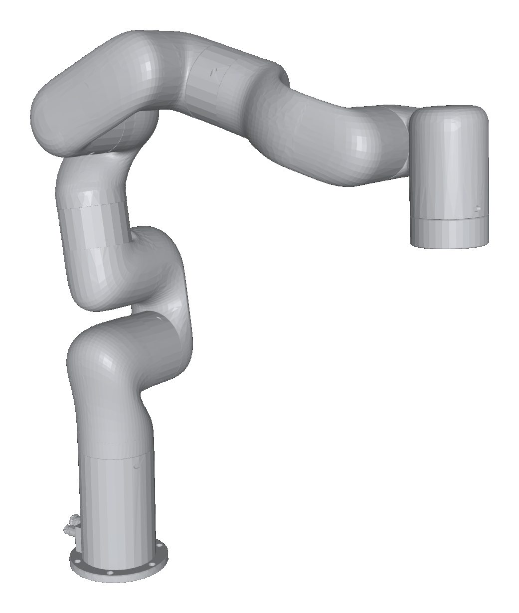

UFACTORY xArm7
로봇팔
설치와 네트워크 연결, 시작 · 종료 순서, UFactory Studio 웹 앱, 좌표계와 TCP 설정, Python SDK 제어, 실시간 데이터, 힘 · 토크 기능, 안전 기능과 문제 해결을 한 권에 정리했습니다.

이 설명서에 대하여
| 로봇 | UFACTORY xArm7 로봇팔 · 컨트롤 박스 |
| 근거 문서 | UFactory Studio 사용자 매뉴얼 — docs.ufactory.cc/user_manual/ufactoryStudio · xArm-Python-SDK · API 문서 — github.com/xArm-Developer/xArm-Python-SDK (doc/api/xarm_api.md) · 실시간 포트 데이터 설명 — docs.supportarticle.ufactory.cc › firmware › data-description-of-tcp-port · xarm_ros2 — github.com/xArm-Developer/xarm_ros2 · LeRobot 플러그인 — github.com/xArm-Developer/lerobot_robot_ufactory · 원격조작 — github.com/xArm-Developer/ufactory_teleop |
| 소프트웨어 | UFactory Studio 2.8.2 (2026-07-31 릴리스) · xArm-Python-SDK 1.18.4 · xarm_ros2 (humble 브랜치) |
| 표기 | 장 제목 · 표 제목 · 그림 설명은 영어, 본문은 한국어. 함수 · 포트 · 에러 코드는 원문 표기 그대로 |
| 판 | 한국어판 · 2026.11.17 |
| 문의 | go.support@wego-robotics.com |
수치와 기능은 UFACTORY 공식 문서 기준입니다. 펌웨어 버전에 따라 일부 기능(예: 실시간 포트 30000)이 없을 수 있으므로, 설치할 때 16장 점검표로 실제 장비의 버전을 먼저 기록하십시오.
© WeGo Robotics. 본 문서는 납품된 xArm7 시스템의 운용을 위해 제공됩니다. UFACTORY · xArm은 UFACTORY의 상표입니다. 표지와 그림 2 · 그림 4의 로봇 이미지는 공개 URDF 메시로 렌더링한 것입니다.
목차
- 01System Overview시스템 구성
- 02Safety Precautions안전 수칙
- 03Specifications제품 사양
- 04Installation & Network설치 · 네트워크 연결
- 05Start-up & Shut-down시작 · 종료 순서
- 06UFactory Studio웹 앱 사용법
- 07Motion Modes & States모션 모드와 상태
- 08Coordinate Systems좌표계 · TCP 설정 · Base / Tool 기준 제어
- 09Python SDK파이썬 프로그래밍
- 10Real-time Data실시간 데이터 수신
- 11Force & Torque힘 · 토크 기능
- 12Safety Functions안전 기능 설정
- 13ROS 2 & Robot ModelROS 2 · URDF
- 14Teleoperation & Data Collection원격조작 · 데이터 수집
- 15Troubleshooting & Error Codes문제 해결 · 에러 코드
- 16Commissioning Checklist설치 점검표
- 부록Quick Reference빠른 참조
System Overview
xArm7 시스템은 로봇팔 · 컨트롤 박스 · 제어 PC 세 장치로 구성됩니다. PC는 이더넷 케이블 한 가닥으로 컨트롤 박스에 연결하며, 모든 명령은 컨트롤 박스를 거쳐 로봇팔로 전달됩니다.
Components 구성 요소
| 장치 | 역할 |
|---|---|
| xArm7 로봇팔 | 7개 회전 관절로 이루어집니다. 끝단 플랜지에 그리퍼 · 6축 힘/토크 센서 등을 장착합니다. 끝단 I/O는 디지털 입력 TI0–TI4, 출력 TO0–TO4, 아날로그 입력 TAI0–TAI1(0–3.3 V)입니다 |
| 컨트롤 박스 | 로봇 제어기입니다. 비상 정지 버튼, 이더넷 포트, 디지털 I/O 32점(CI0–7, DI0–7 입력 / CO0–7, DO0–7 출력), 아날로그 입력 AI0–1, 출력 AO0–1(0–10 V)을 갖추고 있습니다 |
| 제어 PC | 웹 브라우저로 UFactory Studio를 열고, Python SDK · C++ SDK · ROS 2로 프로그램을 실행합니다 |
Network Ports 통신 포트
| 포트 | 용도 | 주기 |
|---|---|---|
| 18333 | UFactory Studio 웹 앱 (브라우저에서 IP:18333) | — |
| 502 | 제어 명령 (SDK · Modbus-TCP). 변경할 수 없음 | — |
| 30000 | 실시간 데이터: 실제 관절 위치 · 속도 · 전류, 추정 토크 등 (10장) | 250 Hz |
| 30003 | 목표 관절각, TCP 위치, 관절 토크 | 100 Hz |
| 30001 · 30002 | 상태 · 에러 코드 · 설정값 (SDK 기본 상태 수신은 30002) | 5 Hz |
Safety Precautions
로봇팔은 사람을 다치게 할 수 있는 힘과 속도(관절 최대 180°/s, TCP(공구 끝점) 최대 1 m/s)로 움직입니다. 운용하기 전에 매번 아래 항목을 확인하십시오. 설치할 때마다 위험성 평가가 필요합니다.
컨트롤 박스의 비상 정지 버튼을 누르면 소프트웨어 감속이 시작되고 300 ms 안에 로봇팔 전원이 차단됩니다. 이때 브레이크가 걸리면서 팔이 약간 처집니다. 손목 아래에 손이나 물건을 두지 마십시오. 비상 정지는 안전 펜스 같은 위험 저감 수단을 대신하지 않습니다.
- 단단한 면에 고정하십시오.설치면은 베이스 관절 최대 토크의 10배, 로봇팔 무게의 5배 이상을 견뎌야 합니다(4장).
- 작업 반경을 비우십시오.도달거리 700 mm + 공구 길이 안에 사람 · 물건이 없게 하고, 필요하면 안전 경계(12장)를 켭니다.
- TCP Payload · 장착 방향을 정확히 입력하고, 충돌 감지 민감도는 3 이상으로 두십시오.관절 토크 센서가 없어 충돌 감지는 모터 전류로 동작합니다. TCP Payload나 장착 방향이 틀리면 충돌 감지가 잘못 작동하고(C31), 수동 모드에서 팔이 스스로 움직일 수 있습니다(C37). 민감도를 0으로 하면 충돌 감지가 꺼지며, UFACTORY는 3 미만을 권장하지 않습니다.
- 새 프로그램은 저속으로 먼저 실행하고, 서보 목표는 촘촘히 보간해 보내십시오.낮은 속도로 경로를 확인한 뒤 속도를 올립니다. 서보 모드(모드 1)는 받은 목표 위치까지 최고 속도로 움직이므로, 보간한 경로를 100–200 Hz로 보냅니다(7장).
- 관절 잠금 해제(Unlock)는 팔을 받친 상태에서 하십시오.해제된 관절은 힘이 없어 떨어집니다. 반드시 한 사람이 팔을 받치고 작업합니다.
- 케이블은 전원을 끈 뒤 다루고, 액체 · 습기를 피하십시오.외부 AC 전원을 분리한 상태에서 로봇팔 케이블을 연결 · 분리합니다. 로봇팔과 컨트롤 박스가 액체에 닿거나 습한 곳에 오래 있지 않게 합니다.
Specifications
xArm7은 가반하중 3.5 kg, 도달거리 700 mm의 7축 로봇팔입니다. 7번째 축 덕분에 TCP 위치 · 자세를 유지한 채 팔 자세(팔꿈치 위치)를 바꿀 수 있습니다.
Key Specifications 주요 사양
| 항목 | 값 |
|---|---|
| 자유도 | 7 (회전 관절) |
| 가반하중 | 3.5 kg |
| 도달거리 | 700 mm |
| 반복정밀도 | ±0.1 mm |
| 무게 (로봇팔) | 약 13.7 kg |
| 관절 최대 속도 · 가속도 | 180°/s · 1146°/s² (3.14 rad/s · 20 rad/s²), 모든 관절 동일 |
| TCP 최대 속도 · 가속도 | 1000 mm/s · 50000 mm/s² (1 m/s · 50 m/s²) |
| 통신 | 이더넷 (TCP/IP, Modbus-TCP) · 기본 IP 192.168.1.xxx |
Joint Range & Max Torque 관절별 범위 · 최대 토크
| 관절 | 범위 | 최대 토크 (모델 1305 미만) | 최대 토크 (모델 1305 이상) |
|---|---|---|---|
| J1 | ±360° | 163.2 N·m | 179.4 N·m |
| J2 | −118° ~ +120° | 163.2 N·m | 179.4 N·m |
| J3 | ±360° | 81.6 N·m | 92 N·m |
| J4 | −11° ~ +225° | 81.6 N·m | 92 N·m |
| J5 | ±360° | 81.6 N·m | 81.6 N·m |
| J6 | −97° ~ +180° | 30.6 N·m | 30.6 N·m |
| J7 | ±360° | 30.6 N·m | 30.6 N·m |
최대 토크는 xarm_ros2 모델의 순간 최댓값(토크 상수 × 감속비 100 × 과부하 배율)이며, 연속 정격 토크는 공개되어 있지 않습니다. 모델 번호는 시리얼 번호(SN)의 3–6번째 자리입니다(예: XS1305… → 1305). SN은 Settings › My Device에 있습니다.
Jerk 저크 (가속도 변화율)
| 항목 | TCP 운동 (직선) | 관절 운동 |
|---|---|---|
| 최대 저크 | 100000 mm/s³ | 28647°/s³ (500 rad/s³) |
| 기본값 | 7000 mm/s³ | 11459°/s³ (200 rad/s³) |
저크는 Settings › General › Advanced에서 바꿀 수 있지만, UFACTORY는 변경을 권장하지 않습니다. SDK · Studio의 기본 단위는 mm · 도(°)이며, 라디안을 쓰려면 is_radian=True를 지정합니다.
Installation & Network
로봇팔을 단단한 면에 고정하고, 컨트롤 박스와 PC를 이더넷 케이블로 직접 연결합니다. PC의 IP는 컨트롤 박스와 같은 대역(192.168.1.x)이어야 합니다.
Mounting 설치
- 작업 공간을 정합니다.팔이 닿는 범위(700 mm + 공구)에 사람 · 설비가 부딪히지 않는 위치를 고릅니다.
- 베이스를 고정합니다.설치면은 충격에 강하고 단단해야 하며, 베이스 관절 최대 토크의 10배 · 로봇팔 무게의 5배 이상을 견뎌야 합니다. 볼트를 모두 조입니다.
- 로봇팔과 컨트롤 박스를 연결합니다.외부 AC 전원을 분리한 상태에서 로봇팔 케이블을 꽂습니다.
- 컨트롤 박스 전원 케이블을 연결합니다.
- 엔드 이펙터를 장착합니다.그리퍼 · 센서를 플랜지에 고정하고, 8장 Setting the TCP 순서로 TCP Payload · TCP Offset을 입력합니다(공식 공구 값: 6장 표 8).
벽 · 천장 · 경사면에 설치하면 Settings › Motion › Coordinates › Mounting에서 기울기(0–180°)와 회전(±180°)을 입력합니다. 값이 틀리면 로봇이 중력 방향을 잘못 인식해 충돌 오감지가 잦아집니다. SN이 XS1300 이후인 로봇은 내장 IMU가 감지한 방향과 설정값이 10° 넘게 다르면 경고를 표시합니다.
Network 네트워크 연결
- 컨트롤 박스 IP를 확인합니다.컨트롤 박스 라벨에 적혀 있습니다. 기본 대역은
192.168.1.xxx(2–254)입니다. - PC와 컨트롤 박스를 직접 연결합니다.UFACTORY는 공유기 없이 케이블로 직접 연결하는 방식을 권장합니다. 연결되면 네트워크 포트 표시등이 빠르게 깜박입니다.
- PC 유선 IP를 같은 대역으로 고정합니다.로봇과 겹치지 않는 주소를 씁니다. Ubuntu 예시:
nmcli con mod "유선 연결 1" ipv4.method manual ipv4.addresses 192.168.1.100/24 nmcli con up "유선 연결 1"
연결 이름은nmcli con show로 확인합니다(영문 Ubuntu: "Wired connection 1"). - 프록시를 끕니다.PC에 네트워크 프록시가 켜져 있으면 접속되지 않습니다.
- 연결을 확인합니다.
ping 192.168.1.xxx로 응답을 확인한 뒤, 브라우저에서192.168.1.xxx:18333을 엽니다(6장).
IP Reset IP를 잊었을 때
IP를 바꿨다면 반드시 컨트롤 박스에 새 IP를 적어 두십시오. 잊어버렸다면 다음 순서로 192.168.1.111로 초기화합니다.
- 비상 정지 버튼을 누르고 컨트롤 박스 전원을 끕니다.
- RI0 단자와 GND를 전선으로 연결합니다.
- 컨트롤 박스 전원을 켭니다."삐" 소리가 나면 IP가 192.168.1.111로 초기화된 것입니다.
- RI0–GND 전선을 빼고 60초 기다립니다.컨트롤 박스가 부팅됩니다.
- 브라우저에서
192.168.1.111:18333을 엽니다.
Start-up & Shut-down
전원 → 네트워크 → Studio → 활성화(Enable) 순서로 켜고, 반대 순서로 끕니다. 활성화 전에는 로봇팔이 움직이지 않습니다.
Start-up 시작 순서
- 주변을 확인합니다.작업 반경 안에 사람 · 물건이 없는지 확인합니다.
- 전원을 켭니다.컨트롤 박스 전원 스위치를 켜고, 비상 정지 버튼을 화살표 방향으로 돌려 올립니다. 로봇팔 전원 표시등이 켜집니다. 부팅까지 약 60초 기다립니다.
- 네트워크를 확인합니다.PC에서
ping으로 컨트롤 박스 응답을 확인합니다(4장). - UFactory Studio를 엽니다.브라우저에서
컨트롤 박스 IP:18333에 접속합니다. - 설정을 확인합니다.홈 화면의 TCP Payload · Collision Sensitivity · Robot-Mounting과 TCP Offset(8장)이 실제 장착 상태와 같은지 확인합니다.
- 로봇을 활성화합니다.홈 화면의 Enable Robot을 누릅니다. Robot State가 Normal이면 명령을 받을 수 있습니다.
- 저속으로 동작을 확인합니다.Live Control에서 한 관절씩 작게 움직여 봅니다. 그다음 SDK 프로그램이나 Blockly 프로젝트를 실행합니다.
Shut-down 종료 순서
- 동작을 멈춥니다.실행 중인 프로그램을 정지합니다(SDK:
arm.set_state(4)). - 안전한 자세로 옮깁니다.팔이 처져도 부딪히지 않는 자세로 옮깁니다. Live Control의 Initial Position은 공구에 맞게 바꿔 둔 경우에만 씁니다(8장).
- SDK 연결을 끊습니다.
arm.disconnect() - 비상 정지 버튼을 누릅니다.로봇팔 전원 표시등이 꺼집니다.
- 컨트롤 박스 전원 스위치를 끕니다.
① 비상 정지 버튼을 화살표 방향으로 돌려 해제하고 ② Studio에서 Enable Robot을 누릅니다.
SDK에서는 arm.clean_error() → arm.motion_enable(True) → arm.set_state(0) 순서입니다.
UFactory Studio
UFactory Studio는 설치 없이 브라우저로 여는 로봇팔 제어 앱입니다. 파라미터를 설정하고, Live Control로 팔을 움직이고, Blockly 블록으로 프로그래밍 없이 동작을 만듭니다. Chrome · Firefox · Safari · Edge를 지원합니다.
Access 접속
브라우저 주소창에 컨트롤 박스 IP:18333을 입력합니다. 예를 들어 컨트롤 박스 IP가 192.168.1.201이면 192.168.1.201:18333을 입력합니다.
Home Screen 홈 화면
| 항목 | 내용 |
|---|---|
| Robot State | Error: 활성화되지 않았거나 에러 상태. 파란 Enable Robot 버튼으로 활성화. Normal: 명령을 받을 준비 완료 |
| Controller IP | 연결된 컨트롤 박스 IP와 축 수(xArm7 = 7) |
| TCP Payload | 현재 설정된 TCP Payload(공구 · 물체 무게) |
| Collision Sensitivity | 충돌 감지 민감도 |
| Robot-Mounting | 장착 방향 |
| Motion Enable | 모터 활성화 여부 |
Settings 설정 메뉴
| 메뉴 | 내용 |
|---|---|
| Motion › Parameters | Live Control의 관절 · 위치 · 자세 스텝, 충돌 감지 민감도(1–5, 3 이상 권장), Initial Position(안전 복귀 자세, xArm 기본값은 모든 관절 0° — 공구를 달면 바꿈, 8장) |
| Motion › TCP | TCP Payload: 공구 + 물체 무게(kg)와 무게중심(mm, 플랜지 기준). 하중이 없으면 모두 0. TCP Offset: 플랜지 중심에서 공구 끝까지의 위치 · 자세. 직접 입력하거나 자동 식별(Payload) · 5점 교시(Offset)로 구함(8장 Setting the TCP) |
| Motion › Coordinates | 사용자 좌표계(직접 입력 또는 3점 교시, 8장), 장착 방향(Mounting) |
| Externals | 끝단 I/O(5 Hz 갱신), 컨트롤 박스 I/O와 I/O 기능(12장), F/T 센서 하중 인식, Modbus RTU(기본 2,000,000 bps), Modbus TCP(포트 502) |
| Safety | 안전 경계(Safety Boundary), 감속 모드(Reduced Mode) — 12장 |
| General | 수동 모드 민감도, 자세 표시 · 조작 방식(축-각 / RPY), Python IDE, 포장 자세(Pack the robot) |
| General › Debugging Tools | 목표 · 실제 관절 위치 · 속도 · 전류, 추정 관절 토크, TCP 자세 그래프와 CSV 다운로드. 관절 잠금 해제(Unlock) |
| General › Advanced | 기본 암호 admin. 관절 · TCP 저크, 충돌 반발, 충돌 감지 켜기 · 끄기, 자기충돌 감지, 설정 내보내기 · 가져오기, 공장 초기화 |
| My Device | IP, 펌웨어 · Studio 버전, 축 수, 시리얼 번호(SN), 네트워크 설정, 업데이트 확인, 에러 로그 다운로드 |
Default TCP Payloads 공식 엔드 이펙터 기본값
| 엔드 이펙터 | Payload [kg, Cx, Cy, Cz] | Offset [x, y, z, roll, pitch, yaw] |
|---|---|---|
| 없음 | [0, 0, 0, 0] | [0, 0, 0, 0, 0, 0] |
| xArm Gripper | [0.82, 0, 0, 48] | [0, 0, 172, 0, 0, 0] |
| xArm Vacuum Gripper | [0.61, 0, 0, 53] | [0, 0, 126, 0, 0, 0] |
| xArm BIO Gripper | [0.72, 22.39, 3.22, 23.55] | [159.5, 0, 59.5, 0, 0, 0] |
| Robotiq 2F-85 | [0.925, 0, 0, 58] | [0, 0, 174, 0, 0, 0] |
| Robotiq 2F-140 | [1.025, 0, 0, 73] | [0, 0, 244, 0, 0, 0] |
공장 초기화나 수리 전에는 Settings › General › Advanced › Export로 설정 파일을 저장하십시오. 같은 메뉴의 Import로 다른 로봇팔에 같은 설정을 넣을 수도 있습니다.
Motion Modes & States
로봇팔은 모드(명령을 받는 방식)와 상태(지금 움직일 수 있는지) 두 값으로 동작합니다.
모드나 주요 설정을 바꾸면 상태가 5가 되며, set_state(0)을 보내야 다시 움직입니다.
Modes 모드 · set_mode(n)
| 모드 | 동작 | 주요 함수 |
|---|---|---|
| 0 · Position | 기본 모드. 관절 · 직선 · 원호 · 원 운동. 명령이 버퍼에 쌓여 차례로 실행 | set_servo_angleset_positionmove_arc_linesmove_circle |
| 1 · Servo | 버퍼 없이 마지막 목표만 즉시 실행. 수신 최대 250 Hz(초과분은 버림). 권장 30–250 Hz, 가능하면 100 또는 200 Hz로 보간한 경로를 보냄. 30 Hz 미만이면 끊겨 움직임. 속도 · 가속도 인자는 쓰이지 않음 | set_servo_angle_jset_servo_cartesian |
| 2 · Manual | 중력 보상 상태에서 손으로 끌어 교시. 교시가 끝나면 set_mode(0), set_state(0)을 보내 모드 0으로 복귀. TCP Payload · 장착 방향이 틀리면 팔이 멈춰 있지 않음 | set_mode(2) |
| 4 · Joint velocity | 관절별 속도 지령. duration이 지나면 속도가 자동으로 0 (펌웨어 1.8.0 이상) | vc_set_joint_velocity |
| 5 · Cartesian velocity | TCP 속도 지령(mm/s, 회전은 축-각속도) | vc_set_cartesian_velocity |
| 6 · Joint online planning | 새 명령이 오면 진행 중인 동작을 끊고 현재 위치에서 다시 계획 | set_servo_angle |
| 7 · Cartesian online planning | 모드 6의 직교좌표 버전. Base 좌표계만 사용(is_tool_coord=False) | set_positionset_position_aa |
모드 4 · 5는 펌웨어 1.6.9 이상에서 동작합니다. 모드 3은 없습니다.
States 상태 · set_state(n) / get_state()
| 상태 | 의미 |
|---|---|
| 0 · 설정 | 대기(STANDBY)로 설정하고 에러 표시를 지움. 설정 후 상태는 자동으로 2가 됨 |
| 1 · 피드백 | 움직이는 중(MOVING) |
| 2 · 피드백 | 준비됨(READY) — 명령을 받아 실행할 수 있음 |
| 3 · 설정/피드백 | 일시정지(PAUSED). set_state(0)으로 이어서 실행 |
| 4 · 설정/피드백 | 정지(STOP). 즉시 멈추고 새 명령을 받지 않음. 에러가 나면 자동으로 이 상태가 됨 |
| 5 · 피드백 | 설정 변경됨(MODE_CHANGED). 모드 · TCP Payload · TCP Offset · 충돌 감지 민감도 등을 바꾸면 이 상태가 되며(진행 중인 동작은 멈추고 대기 중인 명령은 지워짐) set_state(0) 전까지 명령을 받지 않음 |
| 6 · 설정/피드백 | 즉시 감속 정지 |
# 모드를 바꿀 때는 항상 이 두 줄 arm.set_mode(1) # 예: 서보 모드 arm.set_state(0) # 상태 5 → 2(READY)
Coordinate Systems
xArm7에 내리는 명령은 두 가지입니다. 관절 공간 명령은 J1–J7 각도(°)를, 직교 공간 명령은 TCP(공구 끝점)의 위치 · 자세를 지정합니다. 직교 공간 명령은 같은 숫자라도 어느 좌표계 기준인지에 따라 움직임이 달라지므로, 명령을 보내기 전에 기준 좌표계를 확인하십시오.
Coordinate Frames 좌표계 종류
| 좌표계 | 원점 · 방향 | 사용처 |
|---|---|---|
| Joint 관절 | J1–J7 각도(°)입니다. 각 관절의 + 방향은 회전축에 대한 오른손 법칙을 따릅니다(예: J1 +는 위에서 볼 때 반시계 방향). 범위는 3장 표 4에 있습니다 | set_servo_angleLive Control 관절 버튼 |
| Base 베이스 | 원점은 베이스 바닥(설치면)의 중심이며, 로봇에 고정되어 움직이지 않습니다. +Z는 위, +X는 앞(모든 관절이 0°일 때 팔이 뻗는 쪽, 베이스 케이블 커넥터의 반대쪽), +Y는 +X를 바라볼 때 왼쪽입니다 | 위치 표시 · get_positionset_position 기본 기준ROS link_base |
| Tool 공구 (TCP) | 원점은 TCP이며, TCP Offset이 0이면 플랜지 중심입니다. 팔과 함께 움직이며, TCP Offset의 roll · pitch · yaw가 0이면 +Z는 플랜지 면에 수직으로 공구 쪽(바깥)을 향합니다. 모든 관절이 0°일 때 방향은 베이스를 X축으로 180° 돌린 것(자세 [180, 0, 0])입니다 | set_tool_positionis_tool_coord=TrueROS link_eef(플랜지) |
| User 사용자 | 작업대 · 지그 등에 맞춰 정의하는 좌표계입니다. 설정하면 위치 표시와 Base 기준 명령이 베이스 대신 이 좌표계를 기준으로 합니다 | Settings › Motion › Coordinatesset_world_offset |
Pose Representation 위치 · 자세 표현
직교 공간의 자세(pose)는 6개 값 [x, y, z, roll, pitch, yaw]입니다. x · y · z는 기준 좌표계에서 본 TCP 위치(mm), roll · pitch · yaw는 TCP의 방향(°)입니다.
- RPY (SDK 기본): 기준 좌표계의 고정축 X → Y → Z 순서로 roll · pitch · yaw만큼 돌린 방향입니다(XYZ 고정각, R = Rz(yaw)·Ry(pitch)·Rx(roll)). URDF · ROS의 rpy와 같은 정의입니다. 범위는 ±180°이며, +180°와 −180°는 같은 방향이므로 어느 쪽으로든 표시될 수 있습니다.
- 축-각 [rx, ry, rz]: 회전축 단위벡터 × 회전각입니다. 예: X축으로 180° = [180, 0, 0]. SDK는
get_position_aa·set_position_aa를 쓰고, Studio의 표시 방식은 Settings › General에서 고릅니다. - 자세를 바꿀 때 팔은 항상 짧은 쪽으로 돕니다. 두 자세의 차이가 180°에 가까우면 예상과 반대로 돌 수 있으므로 중간 점을 넣으십시오.
그림 4의 0° 자세 값은 팔을 움직이지 않고 계산으로 확인할 수 있습니다.
code, pose = arm.get_forward_kinematics([0] * 7) # 계산만 함, 팔은 움직이지 않음 # TCP Offset · 사용자 좌표계가 0이면 약 [206, 0, 120.5, 180, 0, 0] # 위치는 로봇별 보정값만큼 수 mm 다를 수 있고, roll은 −180으로 보일 수 있음
0° 자세에서는 플랜지가 설치면 위 약 120 mm에서 아래를 향합니다(그림 4). 이보다 긴 공구를 달고 이 자세로 보내면 공구가 설치면에 부딪힙니다.
Studio Live Control의 Initial Position 버튼도 xArm 기본값으로는 모든 관절 0° 자세로 가며, SDK의 move_gohome()도 한계 검사 없이 0° 자세로 갑니다.
공구를 달면 Settings › Motion › Parameters › Initial Position을 공구가 아무것에도 닿지 않는 자세로 바꾸고, move_gohome()은 쓰지 마십시오.
TCP Offset & User Frame TCP Offset · 사용자 좌표계
TCP Offset [x, y, z, roll, pitch, yaw]은 플랜지 중심의 기본 Tool 좌표계에서 본 실제 공구 끝점의 위치 · 방향입니다.
예: xArm Gripper는 [0, 0, 172, 0, 0, 0], 즉 Tool +Z 방향으로 172 mm입니다(6장 표 8).
설정하면 위치 표시가 공구 끝점의 값이 되고, 위치는 그대로 두고 자세만 바꾸는 명령은 공구 끝점을 중심으로 돕니다. 설정 방법은 다음 절에 있습니다.
사용자 좌표계는 숫자를 직접 넣기보다 3점 교시로 만드는 것을 권장합니다. 기준점 → 원하는 +X 방향으로 옮긴 점 → +Y 방향으로 옮긴 점 순서로 TCP를 옮겨 기록하면 방향이 계산됩니다
(Studio Settings › Motion › Coordinates, SDK calibrate_user_orientation_offset · calibrate_user_coordinate_offset).
set_world_offset(offset)에 숫자를 직접 넣을 때는 주의하십시오. 공식 문서마다 offset의 방향 설명이 다릅니다(Studio 문서: 베이스에서 본 사용자 좌표계, 개발자 매뉴얼: 사용자 좌표계에서 본 베이스).
직접 넣기 전에 아래처럼 팔을 움직이지 않고 확인합니다.
code, p = arm.get_position() # 현재 [x, y, z, ...] arm.set_world_offset([100, 0, 0, 0, 0, 90]) code, q = arm.get_position() # q[:3] = (y, 100−x, z) → offset = 베이스에서 본 사용자 좌표계 # q[:3] = (100−y, x, z) → offset = 사용자 좌표계에서 본 베이스 arm.set_world_offset([0, 0, 0, 0, 0, 0]); arm.set_state(0)
두 값이 바뀌면 같은 숫자의 목표가 다른 위치를 뜻합니다. 지점을 기록하거나 저장된 프로그램을 실행하기 전에, 두 값이 프로그램을 만들 때와 같은지 확인하십시오. Live Control은 사용자 좌표계가 0이 아니면 Base 대신 사용자 좌표계 기준으로 표시합니다.
Setting the TCP TCP 설정 · 변경
공구를 달거나 바꿀 때는 세 가지를 맞춥니다. TCP Payload(공구 + 물체의 무게 · 무게중심)는 충돌 감지와 수동 모드의 중력 보상에 쓰이고, TCP Offset(공구 끝점)은 위치 표시와 직교 공간 이동에 쓰입니다. 자기충돌 모델(공구를 감싸는 형상)은 자기충돌 감지(12장)를 켰을 때 팔이 자기 공구와 부딪히는지 판단하는 데 쓰입니다. Payload의 무게중심 [Cx, Cy, Cz]도 Offset과 같이 플랜지 중심의 기본 Tool 좌표계 기준(mm)입니다.
| 항목 | 공식 엔드 이펙터 | 다른 공구 (타사 · 자체 제작) |
|---|---|---|
| 공구 선택 | Live Control › End Effector에서 선택. 끝단 RS-485 통신 속도도 함께 맞춰짐(xArm Gripper 2,000,000 bps, Robotiq 115,200 bps) | Other를 고르고, 공구를 감싸는 원기둥 · 직육면체를 자기충돌 모델로 지정 |
| TCP Payload | 6장 표 8의 값이 기록으로 들어 있으므로 목록에서 선택 | 무게 · 무게중심을 알면 직접 입력, 모르면 자동 식별(팔이 스스로 움직이며 측정) |
| TCP Offset | Payload와 같은 기록에 들어 있음 | 도면 값을 직접 입력, 또는 Teaching Tool Center(5점 교시) |
Studio · 새 기록 만들기
- 새 기록을 만듭니다.Settings › Motion › TCP에서 + New를 누르고 이름(예: 공구 이름)을 입력한 뒤 Next Step을 누릅니다. 이후에는 이름을 바꿀 수 없습니다.
- Payload를 넣습니다.직접 입력하거나 자동 식별을 고릅니다. 자동 식별은 팔이 여러 자세로 스스로 움직이므로, 팔이 단단히 고정되어 있고 주변에 사람 · 물체가 없을 때만 실행합니다. 물체를 잡은 상태에서 쓸 값이면 물체를 잡은 채로 측정합니다.
- Offset을 넣습니다.값을 알면 Manual Input, 모르면 Teaching Tool Center를 고릅니다(아래 5점 교시).
- 현재 설정으로 적용합니다.TCP Payload and Offset 화면 오른쪽 위 목록에서 이 기록을 고르고, 홈 화면의 TCP Payload 값이 바뀌었는지 확인합니다. 공구를 다시 바꿀 때도 목록에서 그 기록만 고르면 됩니다.
Teaching Tool Center · 5점 교시
- 현재 Offset을 0으로 둡니다.시작 전 TCP Offset이 [0, 0, 0, 0, 0, 0]이어야 하며, 교시하는 동안 Offset이나 사용자 좌표계를 바꾸면 안 됩니다.
- 기준점을 고정합니다.작업대에 끝이 뾰족한 핀 등을 단단히 세웁니다.
- 같은 점을 4가지 자세로 찍습니다.공구 끝을 기준점에 정확히 맞추고 Set Point를 누르는 동작을 네 번 반복합니다. 네 자세는 공구 방향이 서로 크게 달라야 하며 한 평면 위에 있으면 안 됩니다. 수동 모드로 끌어 대략 맞춘 뒤 Live Control의 작은 스텝으로 끝을 맞추면 정확합니다.
- 나머지 한 점으로 공구 방향을 정합니다.화면 안내를 따릅니다. 공구 축이 플랜지 축과 나란한 일반 그리퍼는 roll · pitch · yaw 오프셋이 0입니다.
- 결과를 확인합니다.계산된 Offset의 Z가 실제 공구 길이(플랜지 면 → 공구 끝)와 비슷한지 보고, 아래 Verify 방법으로 확인합니다.
SDK · 파이썬으로 설정
# 1) Payload를 알 때: 무게(kg), 무게중심 [x, y, z](mm, 플랜지 기준) arm.set_tcp_load(0.82, [0, 0, 48]) # 예: xArm Gripper # 모를 때만 자동 식별 (펌웨어 1.8.0 이상, 팔이 스스로 움직임): # arm.set_mode(0); arm.set_state(0) # code, load = arm.iden_tcp_load() # [kg, Cx, Cy, Cz] # arm.set_tcp_load(load[0], load[1:]) # 2) Offset (기본 wait=True: 앞선 동작이 끝난 뒤 적용) arm.set_tcp_offset([0, 0, 172, 0, 0, 0]) # 3) 자기충돌 모델: xArm Gripper = 1 (다른 공구: 21 원기둥, 22 직육면체) arm.set_collision_tool_model(1) arm.set_state(0) # 설정 변경 후 상태 5 → READY arm.save_conf() # 저장하지 않으면 재부팅 후 사라짐
Offset을 4점으로 구하는 SDK 함수는 calibrate_tcp_coordinate_offset입니다(펌웨어 1.6.9 이상). Studio에서와 마찬가지로 Offset을 0으로 두고 실행합니다.
공구 방향(roll · pitch · yaw)은 calibrate_tcp_orientation_offset으로 구합니다.
arm.set_mode(2); arm.set_state(0) # 수동 모드: 손으로 끌어 맞춤 pts = [] for i in range(4): # 같은 점을 4가지 자세로 input(f'{i + 1}/4: 공구 끝을 기준점에 맞추고 Enter') pts.append(arm.get_position()[1]) arm.set_mode(0); arm.set_state(0) code, xyz = arm.calibrate_tcp_coordinate_offset(pts) # [x, y, z] mm arm.set_tcp_offset(xyz + [0, 0, 0]); arm.set_state(0) # 공구 방향 오프셋이 0일 때
SDK로 넣은 값은 Studio 목록에서 다른 기록을 고르거나 TCP를 설정하는 Blockly 프로젝트를 실행하면 바뀝니다. Studio 값과 다르면 Studio가 덮어쓸 수도 있습니다(UFACTORY ROS 문서). Studio의 Settings › Motion › TCP에도 같은 기록을 만들어 두십시오.
Verify · 확인
- Offset: 공구 끝을 기준점에 맞춘 뒤 Live Control에서 roll · pitch · yaw(축-각 조작을 골랐으면 Rx · Ry · Rz)를 조금씩 움직입니다. 공구 끝이 기준점에 그대로 있으면 정상이고, 원을 그리며 벗어나면 Offset이 틀린 것입니다.
- Payload: 수동 모드에서 손을 떼었을 때 팔이 스스로 처지거나 움직이지 않아야 합니다. 아무것도 부딪히지 않았는데 충돌 정지(C31)가 나면 Payload를 다시 확인합니다.
- 기록:
01_check.py로 값을 읽어 16장 표 29에 적고, 설정을 내보내기(Export)로 저장합니다.
Changing the Tool · 공구 교체 순서
- 프로그램을 멈추고 팔을 옮깁니다.공구를 떼고 달 공간이 있는 자세로 팔을 둡니다.
- 로봇팔 전원을 끄고 공구를 답니다.비상 정지 버튼을 눌러 로봇팔 전원 표시등이 꺼진 것을 확인한 뒤(끝단 케이블 활선 연결 금지), 공구를 플랜지에 고정하고 케이블을 연결합니다.
- 공구를 선택합니다.비상 정지를 해제하고 Enable Robot을 누른 뒤 Live Control › End Effector에서 공구를 고릅니다(공식 공구가 아니면 Other + 충돌 모델).
- TCP 기록을 고르거나 새로 만듭니다.위 Studio 절차를 따릅니다.
- Initial Position을 확인합니다.새 공구로 그 자세에 갔을 때 설치면 · 주변에 닿지 않는지 확인합니다.
- 확인하고 기록합니다.위 Verify 항목을 확인하고, 저장된 프로그램은 저속으로 먼저 실행합니다.
Base vs Tool Control Base / Tool 기준 이동
Base 기준 명령은 공구 방향과 관계없이 베이스의 X · Y · Z 방향으로 움직입니다(예: 바닥 설치 · 사용자 좌표계 0일 때 z −20 = 수직으로 20 mm 아래). 사용자 좌표계를 설정했으면 Base 기준 명령은 그 좌표계의 축을 따릅니다. Tool 기준 명령은 현재 공구의 X · Y · Z 방향으로 움직입니다(예: z +20 = 공구가 향한 쪽으로 20 mm 전진. 비스듬한 그리퍼로 물체에 다가갈 때 씁니다). Tool 좌표계는 팔과 함께 움직이므로 Tool 기준 명령은 항상 현재 TCP에서의 상대 이동입니다.
# Base 기준: 베이스 Z 방향으로 20 mm 아래 (공구 방향과 무관) arm.set_position(z=-20, relative=True, speed=50, wait=True) # Tool 기준: 공구가 향한 쪽(Tool +Z)으로 20 mm 전진 arm.set_tool_position(z=20, speed=50, wait=True)
| 용도 (모드) | Base 기준 | Tool 기준 |
|---|---|---|
| 목표 자세로 이동 (0) | set_position(x=…, …)절대 좌표 | 없음 (Tool 기준은 상대 이동만) |
| 상대 이동 (0) | set_position(…, relative=True) | set_tool_position(x=…, …) |
| 축-각 자세 (0) | set_position_aa(pose)relative=True 가능 | set_position_aa(pose,is_tool_coord=True) — relative 무시 |
| 속도 지령 (5) | vc_set_cartesian_velocity(v) | vc_set_cartesian_velocity(v,is_tool_coord=True) |
| 서보 스트리밍 (1) | set_servo_cartesian(pose)절대 좌표 | set_servo_cartesian(pose,is_tool_coord=True) — pose 해석 방식이 문서에 없으므로 작은 값으로 먼저 확인 |
| 온라인 계획 (7) | set_position · set_position_aa | 지원하지 않음 |
| Studio Live Control | Base 선택(기본) | Tool 선택 |
Live Control의 버튼은 짧게 누르면 한 스텝(Settings › Motion › Parameters의 스텝 값)만 움직이고, 길게 누르면 누르는 동안 계속 움직입니다.
Python SDK
xArm-Python-SDK로 PC에서 로봇팔을 제어합니다. 모든 프로그램은 연결 → 에러 지우기 → 활성화 → 모드 · 상태 설정 → 명령 순서를 따릅니다.
Install 설치
pip install xarm-python-sdk # 1.18.4 (PyPI), Python 3.5 이상
C++ SDK(xArm-CPLUS-SDK)는 Linux · Windows를 지원하며 같은 함수 이름을 씁니다.
Connect & Enable 연결 · 활성화
from xarm.wrapper import XArmAPI
arm = XArmAPI('192.168.1.xxx') # 컨트롤 박스 IP
arm.clean_error()
arm.clean_warn()
arm.motion_enable(enable=True)
arm.set_mode(0) # 위치 모드
arm.set_state(0) # READY
함수는 반환 코드 code를 돌려줍니다. 0이면 성공이고, 그 외 값의 의미는 표 28(15장)에 있습니다. 값을 읽는 함수는 code, value 두 개를 돌려줍니다.
SDK로 바꾼 설정(충돌 감지 민감도 · TCP Payload 등)은 arm.save_conf()를 호출해야 재부팅 후에도 유지됩니다.
Basic Motion 기본 이동 · 모드 0
code, angles = arm.get_servo_angle() # 관절각 [J1..J7] (°) code, pose = arm.get_position() # [x,y,z,roll,pitch,yaw] mm, ° # J1을 10° 회전 (현재 위치 기준, 20°/s), 끝날 때까지 기다림 arm.set_servo_angle(servo_id=1, angle=10, relative=True, speed=20, wait=True) # TCP를 베이스 기준 20 mm 내림 (z −20, 50 mm/s) arm.set_position(z=-20, relative=True, speed=50, wait=True)
Servo Streaming 서보 스트리밍 · 모드 1
import time arm.set_mode(1); arm.set_state(0); time.sleep(0.1) code, q = arm.get_servo_angle() t = time.perf_counter() for _ in range(200): # 100 Hz × 2초 q[0] += 0.05 # J1을 한 주기에 0.05° (= 5°/s) arm.set_servo_angle_j(q) # 버퍼 없음: 마지막 목표만 실행 t += 0.01 # 주기를 일정하게 유지 time.sleep(max(0, t - time.perf_counter())) arm.set_mode(0); arm.set_state(0)
Velocity Control 속도 제어 · 모드 4
arm.set_mode(4); arm.set_state(0); time.sleep(0.1)
# J1을 5°/s로, 1초 뒤 자동 정지
arm.vc_set_joint_velocity([5, 0, 0, 0, 0, 0, 0], duration=1.0)
duration은 통신이 끊겨도 팔이 계속 움직이지 않게 하는 안전장치입니다. 매 주기 명령을 다시 보내는 구조에서는 짧게(예: 주기의 몇 배) 잡습니다.
Gripper 그리퍼
arm.set_gripper_mode(0) arm.set_gripper_enable(True) arm.set_gripper_position(800, wait=True) # xArm Gripper: 800 = 열림 arm.set_gripper_position(0, wait=True) # 0 = 닫힘
xArm Gripper G2는 set_gripper_g2_position(pos)(0–84 mm), Robotiq 그리퍼는 robotiq_* 함수를 씁니다.
Error Handling 에러 처리
def on_err(data): # {'error_code': .., 'warn_code': ..} if data['error_code'] != 0: print('error', data['error_code']) arm.register_error_warn_changed_callback(on_err) # 복구 순서 arm.clean_error() arm.motion_enable(True) arm.set_state(0)
API Reference & Examples API 문서 · 예제
이 장의 함수 외에도 SDK에는 많은 함수가 있습니다. 함수별 인자 · 반환값 · 필요한 펌웨어 버전은 공식 API 문서에서 확인하십시오.
| 자료 | 위치 · 내용 |
|---|---|
| API 문서 | github.com/xArm-Developer/xArm-Python-SDK › doc/api/xarm_api.md — 전체 함수의 인자 · 반환값 · 필요 펌웨어. 반환 코드는 같은 폴더의 xarm_api_code.md |
| 공식 예제 | 같은 저장소의 example/wrapper/common/ — 모드별 예제(예: 1001-move_line.py, 7001-servo_j.py, 2000-joint_velocity_control.py). pip install에는 포함되지 않으므로 저장소에서 받음 |
Delivered Scripts · 제공 예제 스크립트
이 설명서와 함께 제공되는 xArm7_examples.zip에 표 15의 세 스크립트가 있습니다. 01 → 03 → 02 순서로 실행하십시오.
| 스크립트 | 내용 | 로봇 동작 |
|---|---|---|
01_check.py | 펌웨어, 시리얼 번호 · 모델 번호, 축 수, 상태 · 모드, 에러 · 경고 코드, TCP Payload, TCP Offset, 사용자 좌표계 오프셋, 충돌 감지 민감도, 실제 · 목표 관절각, TCP 자세를 출력합니다. 이 중 펌웨어 · SN · 모델 번호 · TCP Payload · TCP Offset · 민감도는 표 29에 기록합니다 | 움직이지 않음 |
03_rt30000.py | 포트 30000을 읽어 0.5초마다 수신 주기(Hz), 관절각(°), 추정 관절 토크(N·m)를 출력합니다. 시작할 때 SDK로 읽은 실제 관절각을 한 번 출력하므로, 이어지는 관절각과 같은지 비교하십시오. --selftest는 로봇 없이 파서를 확인합니다 | 움직이지 않음 |
02_move.py | J1을 +10° 돌렸다 되돌리고, TCP를 z −20 mm 옮겼다 되돌립니다. --servo는 100 Hz 서보 스트리밍(J1 +5° 후 복귀, 2초)을, --gripper는 그리퍼 열기 · 닫기를 이어서 실행합니다. 실행 전에 y/N으로 묻고, Ctrl+C로 멈춥니다(상태 4) | 움직임 |
unzip xArm7_examples.zip
python3 -m venv .venv
.venv/bin/pip install xarm-python-sdk==1.18.4
.venv/bin/python examples/01_check.py 192.168.1.xxx
.venv/bin/python examples/03_rt30000.py 192.168.1.xxx
.venv/bin/python examples/02_move.py 192.168.1.xxx # 작업 반경을 비운 뒤
제공 스크립트는 Python 3.8 이상이 필요합니다(SDK 자체는 3.5 이상). Ubuntu에서 python3 -m venv가 실패하면 먼저 sudo apt install python3-venv를 실행하십시오.
Real-time Data
컨트롤 박스는 로봇 상태를 TCP 포트로 계속 보냅니다. 데이터 수집이나 폐루프 제어에는 250 Hz의 포트 30000을 쓰십시오. SDK가 기본으로 받는 상태(arm.angles 등)는 5 Hz로 갱신됩니다.
| 포트 | 주기 | 내용 | 필요 펌웨어 |
|---|---|---|---|
| 30000 | 250 Hz (F/T 센서 사용 시 200 Hz) | 목표 · 실제 관절 위치 · 속도 · 가속도, 실제 관절 전류, 추정 관절 토크, TCP 자세 · 속도, 추정 TCP 힘, F/T 센서 원시 · 필터값, 그리퍼 상태 | 2.7.101 이상 |
| 30003 | 100 Hz | 목표 관절각, TCP 위치, 관절 토크 | — |
| 30001 · 30002 | 5 Hz | 상태 · 에러 코드 · TCP 설정 · 민감도 등 | 1.8.0 이상 |
XArmAPI는 기본으로 포트 30002(5 Hz)에서 상태를 받아 arm.angles 같은 속성을 갱신합니다. get_servo_angle()은 호출할 때마다 컨트롤 박스에 질의하지만 기본으로 목표 관절각을 돌려줍니다.
실제 관절각은 get_servo_angle(is_real=True)로 읽으며, 펌웨어 1.9.110 미만에서는 경고 없이 목푯값이 나옵니다. 250 Hz 실측 데이터가 필요하면 포트 30000을 직접 읽으십시오.
Port 30000 Layout 주요 필드 위치
표 17의 오프셋은 패킷 첫 바이트를 0으로 센 값입니다. 처음 4바이트는 이 4바이트를 포함한 패킷 전체 길이(big-endian u32)이고, 실수는 little-endian float32입니다.
| 바이트 | 필드 | 형식 · 단위 |
|---|---|---|
| 0–3 | 패킷 전체 길이 | u32 |
| 4–11 | 타임스탬프 | u64 · µs |
| 32–59 | 목표 관절 위치 | 7 × f32 · rad |
| 116–143 | 실제 관절 위치 | 7 × f32 · rad |
| 144–171 | 실제 관절 속도 | 7 × f32 · rad/s |
| 200–227 | 실제 관절 전류 | 7 × f32 · A |
| 228–255 | 추정 관절 토크 | 7 × f32 · N·m |
| 472–495 | 실제 TCP 자세 | 6 × f32 · mm, rad |
| 520–543 | 추정 TCP 힘 · 토크 | 6 × f32 · N, N·m |
| 712–735 | F/T 센서 필터값 | 6 × f32 · N, N·m |
Reading Example 읽기 예제
import socket, struct
def read_exact(s, n):
buf = b''
while len(buf) < n:
chunk = s.recv(n - len(buf))
if not chunk:
raise ConnectionError('closed')
buf += chunk
return buf
s = socket.create_connection(('192.168.1.xxx', 30000))
while True:
hdr = read_exact(s, 4)
size = struct.unpack('>I', hdr)[0] # 패킷 전체 길이 (이 4바이트 포함)
pkt = hdr + read_exact(s, size - 4)
q = struct.unpack('<7f', pkt[116:144]) # 실제 관절 위치 (rad)
cur = struct.unpack('<7f', pkt[200:228]) # 실제 관절 전류 (A)
tau = struct.unpack('<7f', pkt[228:256]) # 추정 관절 토크 (N·m)
먼저 4바이트로 패킷 전체 길이를 읽고, 나머지를 읽어 앞 4바이트와 합친 뒤 표 17의 오프셋으로 자릅니다. 수신 주기 표시까지 포함한 전체 코드는 제공 스크립트 03_rt30000.py입니다(9장). 설치할 때 관절각이 Studio에 표시된 값과 같은지 한 번 확인하십시오(16장).
Force & Torque
xArm7 관절에는 토크 센서가 없습니다. 관절 토크는 모터 전류와 동역학 모델로 추정한 참고용 값이며, 관절 토크나 전류를 직접 명령하는 기능은 없습니다. 힘 제어가 필요하면 UFACTORY 6축 힘/토크(F/T) 센서를 씁니다.
Reading Joint Torque 관절 토크 읽기
| 방법 | 내용 |
|---|---|
get_joints_torque() | 관절별 추정 토크 (참고용) |
set_report_tau_or_i(n) | 보고할 값 선택: 0 = 추정 토크(N·m), 1 = 모터 전류(A) |
| 포트 30000 | 추정 관절 토크 · 실제 관절 전류 · 추정 TCP 힘을 250 Hz로 수신 (10장) |
Torque Limits 토크 한계
관절별 최대 토크(모델 1305 미만 / 이상)는 3장 표 4에 있습니다. 사용자가 관절 토크 · 전류 한계를 직접 설정하는 기능은 없으며, 대신 다음 기능으로 힘을 제한합니다.
- 충돌 감지 민감도(1–5): 전류가 모델 예측에서 벗어나면 정지 (12장)
- 정확한 TCP Payload: 하중이 틀리면 모델 예측이 틀어져 오감지 · 미감지가 생김
- F/T 센서 충돌 감지:
set_ft_collision_threshold로 x · y · z 5–200 N, Rx · Ry · Rz 0.1–4 N·m (펌웨어 2.6.103 이상)
F/T Sensor & Force Control 힘 제어
UFACTORY 6축 F/T 센서가 필요합니다(타사 센서는 지원하지 않음). 펌웨어 1.8.3 이상에서 동작합니다.
| 함수 | 내용 |
|---|---|
set_ft_sensor_enable(1) | 센서 측정값 사용 켜기 (0 = 끄기) |
set_ft_sensor_zero() | 현재 값을 영점으로. 공구에 외력이 없을 때 실행 |
set_ft_sensor_mode(n) | 0 = 힘 제어 끔, 1 = 어드미턴스(외력에 순응), 2 = 힘 제어(목표 힘 유지) |
set_ft_sensor_admittance_parameters | 인자 (coord, c_axis, M, K, B). coord: 0 = Base, 1 = Tool 좌표계. c_axis: 순응할 축(6개, 0/1). M: 질량, K: 강성. 감쇠 B는 제어기가 2√(M·K)로 정함 |
set_ft_sensor_force_parameters | 인자 (coord, c_axis, f_ref, limits, kp, ki, kd, xe_limit). f_ref: 목표 힘 · 토크, limits: 순응 축의 최대 TCP 속도, kp · ki · kd: PID 이득 |
get_ft_sensor_data() | 센서 값 읽기 |
arm.set_ft_sensor_enable(1) arm.set_ft_sensor_zero() # 외력 없는 상태에서 # 먼저 M, K를 6개 값 리스트로 정하십시오 (허용 범위: UFACTORY F/T 센서 문서) arm.set_ft_sensor_admittance_parameters( coord=1, c_axis=[0, 0, 1, 0, 0, 0], # Tool z축만 순응 M=M, K=K, B=[0]*6) # B는 제어기가 계산 arm.set_ft_sensor_mode(1) # 1 = 어드미턴스 arm.set_state(0) # ... 작업 ... arm.set_ft_sensor_mode(0) arm.set_ft_sensor_enable(0)
M · K 값은 UFACTORY F/T 센서 문서에서 허용 범위를 확인한 뒤 작은 값부터 시험하십시오. 센서 관련 에러는 C50–C53입니다(15장).
xArm7은 토크 명령을 받지 않으므로 힘을 되돌려 주는 리더(마스터) 팔로는 쓸 수 없습니다. xArm7을 팔로워로 쓸 때는 포트 30000에서 추정 관절 토크(250 Hz)나 F/T 센서 값(200 Hz)을 읽어 별도의 햅틱 장치로 보낼 수 있습니다.
Safety Functions
안전 기능은 Studio 설정이나 SDK로 켭니다. SDK로 바꾼 값은 save_conf()를 호출해야 재부팅 후에도 유지됩니다.
| 기능 | 동작 | Studio 메뉴 · SDK 함수 |
|---|---|---|
| 충돌 감지 | 관절 전류가 동역학 모델 예측보다 크게 벗어나면 정지(C31). 민감도가 높을수록 작은 힘에도 반응 | Settings › Motion › Parameters (1–5)set_collision_sensitivity (0–5, 0 = 끔) |
| 충돌 반발 | 충돌 후 일정 거리 뒤로 물러남. 끄면 충돌 위치에 멈춤 | Settings › General › Advancedset_collision_rebound |
| 자기충돌 감지 | 로봇팔의 링크끼리, 또는 공구와 팔이 부딪히는 자세를 막음(C22). 공구 형상(원기둥 · 직육면체)을 추가할 수 있음 | Settings › General › Advancedset_self_collision_detectionset_collision_tool_model |
| 안전 경계 | TCP가 정해 둔 직교 공간 상자([x_max, x_min, y_max, y_min, z_max, z_min])를 벗어나면 정지(C35). 손으로 다시 안으로 옮김. SDK로 경계를 바꾼 뒤에는 set_reduced_mode(True)를 다시 호출해야 적용됨 | Settings › Safetyset_reduced_tcp_boundaryset_fence_mode |
| 감속 모드 | 최대 직선 속도 · 관절 속도 · 관절 범위를 제한 | Settings › Safetyset_reduced_mode |
| 수동 모드 민감도 | 손으로 끌 때 필요한 힘(1–5, 클수록 가벼움) | Settings › Generalset_teach_sensitivity |
Stop Categories 정지 방식
| 입력 | 정지 범주 | 재시작 |
|---|---|---|
| 컨트롤 박스 비상 정지 버튼 | Stop Category 1 (감속 후 전원 차단) | 버튼 해제 → Enable Robot (C1) |
| 비상 정지 입력 EI | Stop Category 1 | EI 2개를 GND에 연결 → Enable Robot (C2) |
| 보호 정지 입력 SI | Stop Category 2 (감속 정지, 전원 유지) | Safeguard Reset 입력으로 재개 |
| SDK · Studio 정지 | 상태 4(즉시 정지) 또는 6(감속 정지) | set_state(0) |
Controller Input Functions 컨트롤 박스 입력 기능
CI0–CI7에는 표 22의 기능을 지정할 수 있으며, Low 신호에서 동작합니다(Settings › Externals › Controller IO).
| 기능 | 내용 |
|---|---|
| Stop Moving | 입력 시 로봇팔 정지 |
| Safeguard Reset | 보호 정지 상태에서 동작 재개. SI와 함께 사용 |
| Reduced Mode | 입력 시 감속 모드 |
| Manual Mode | 입력이 Low인 동안 손으로 끌 수 있음 |
| Enable Robot | 입력으로 로봇 활성화 |
| Offline Task | 입력으로 Blockly 프로젝트 실행 |
| General Input | Blockly · SDK에서 자유롭게 사용. 기능이 지정된 입력은 프로그램에서 사용 금지 |
DI0–DI7에는 Stop Moving · Safeguard Reset · Reduced Mode를 지정할 수 없습니다.
UFACTORY는 xArm 시리즈의 CE 인증 규격으로 EN ISO 10218-1:2011 · EN 60204-1 · EN ISO 12100 등을 밝히고 있습니다(인증서에 기재된 모델은 xArm 6). 설치 현장의 위험성 평가는 별도로 하십시오.
ROS 2 & Robot Model
ROS 2 드라이버 · MoveIt 설정 · 로봇 모델은 UFACTORY의 xarm_ros2 저장소에 있습니다. ROS 배포판과 같은 이름의 브랜치를 씁니다.
| Ubuntu | ROS 2 | 브랜치 |
|---|---|---|
| 20.04 | Foxy · Galactic | foxy · galactic |
| 22.04 | Humble · Rolling | humble (Gazebo: humble_gz) · rolling |
| 24.04 | Jazzy | jazzy |
Install 설치
source /opt/ros/humble/setup.bash # 사용하는 ROS 2 배포판
mkdir -p ~/dev_ws/src && cd ~/dev_ws/src
git clone https://github.com/xArm-Developer/xarm_ros2.git \
--recursive -b $ROS_DISTRO
cd ~/dev_ws/src && rosdep update
rosdep install --from-paths . --ignore-src --rosdistro $ROS_DISTRO -y
cd ~/dev_ws && colcon build
source install/setup.bash
--recursive를 빼면 의존 서브모듈을 받지 않습니다. 같은 네트워크에 ROS 2 사용자가 여럿이면 ROS_DOMAIN_ID를 따로 정하십시오.
Launch 실행
# 모델 보기 (로봇 없이) ros2 launch xarm_description xarm7_rviz_display.launch.py add_gripper:=true # 드라이버 ros2 launch xarm_api xarm7_driver.launch.py robot_ip:=192.168.1.xxx # MoveIt — 가상 로봇 ros2 launch xarm_moveit_config xarm7_moveit_fake.launch.py # MoveIt — 실제 로봇 ros2 launch xarm_moveit_config xarm7_moveit_realmove.launch.py \ robot_ip:=192.168.1.xxx
모델 보기 명령의 add_gripper:=true는 xArm Gripper를 붙여 표시합니다. 그리퍼가 없으면 빼십시오.
Robot Model (URDF) 로봇 모델
모델은 xarm_description 패키지에 xacro 형식으로 들어 있습니다. 진입 파일은 urdf/xarm_device.urdf.xacro, 인자는 dof:=7 · robot_type:=xarm입니다.
link_base는 Base 좌표계, link_eef는 TCP Offset이 0인 Tool 좌표계(플랜지 중심)와 같습니다(8장 그림 4).
관절 범위는 3장 표 4에 있습니다. 최대 토크는 launch 인자 robot_sn:=<SN>을 주면 모델 번호에 따라 config/xarm7/의 joint_limits.yaml(1305 미만) 또는
joint_limits_1305.yaml(1305 이상)에서 읽습니다. 인자를 주지 않으면 항상 joint_limits.yaml을 씁니다.
Calibrated Kinematics · 로봇별 보정값
2023년 8월 이후 생산된 xArm은 로봇마다 보정된 기구학 값이 컨트롤 박스에 저장되어 있습니다. 이를 URDF에 넣으면 정확도가 올라갑니다.
cd ~/dev_ws/src/xarm_ros2/xarm_description/config/kinematics
python3 gen_kinematics_params.py 192.168.1.xxx SITE1
# → config/kinematics/user/xarm7_kinematics_SITE1.yaml
cd ~/dev_ws && colcon build --packages-select xarm_description
source install/setup.bash
ros2 launch xarm_moveit_config xarm7_moveit_realmove.launch.py \
robot_ip:=192.168.1.xxx kinematics_suffix:=SITE1
파일은 소스 폴더에 만들어지므로, xarm_description을 다시 빌드해야 launch가 파일을 찾습니다.
Teleoperation & Data Collection
UFACTORY가 공개한 원격조작 · LeRobot 도구로 xArm7 시연 데이터를 수집하고 정책을 학습시킬 수 있습니다.
| 도구 | 입력 장치 | 로봇 제어 방식 |
|---|---|---|
| lerobot_robot_ufactory (UFACTORY LeRobot 플러그인) | GELLO, Pika, UMI, SpaceMouse. RealSense · UMI 카메라 수집, ACT · Diffusion Policy 학습 | 관절: 모드 6, 직교: 모드 7. xArm7 GELLO 설정의 기록 주기 30 fps. lerobot==0.6.1, Python 3.12 이상 |
| ufactory_teleop | Pika Sense, FastUMI, GELLO, Xbox 패드, SpaceMouse | GELLO는 관절, 나머지는 직교 공간. xArm 5/6/7 · Lite 6 · 850 지원 |
| GELLO (gello_software) | GELLO 리더 팔(Dynamixel) | 모드 1 set_servo_angle_j, 50 Hz. 한 주기 관절 변화량(7개 관절 벡터의 크기)을 0.05 rad 이하로 제한 |
Recommendations 수집할 때 권장 사항
- 관측값은 실측값으로. 관절 상태는 포트 30000의 실제 관절 위치(250 Hz)를 기록합니다. SDK 기본 속성(arm.angles, 5 Hz)이나 get_servo_angle() 기본값(목푯값)은 학습 관측값으로 쓰지 않습니다(10장).
- 행동(action)은 보낸 목푯값으로. 로봇에 보낸 명령을 그대로 기록해야 정책이 같은 명령을 재현합니다.
- 서보 모드는 고르게. 모드 1을 쓰면 100–200 Hz로 일정하게 보내고, 한 주기 이동량을 제한합니다.
- 그리퍼 범위를 통일. xArm Gripper 위치(0 = 닫힘, 800 = 열림)를 0–1로 정규화해 기록하면 그리퍼를 바꿔도 데이터를 재사용할 수 있습니다.
Troubleshooting & Error Codes
에러가 나면 로봇팔은 즉시 멈추고 쌓인 명령을 버립니다. 원인을 해결한 뒤 에러를 지우고(Clear Error) 다시 활성화합니다.
Symptoms 증상별 조치
| 증상 | 조치 |
|---|---|
브라우저에서 IP:18333이 열리지 않음 | PC 유선 IP가 192.168.1.x인지, 프록시가 꺼져 있는지, 케이블 · ping을 확인합니다. IP를 모르면 4장 IP Reset 순서로 초기화합니다 |
| Robot State가 Error | 표시된 에러 코드를 표 26 · 표 27에서 확인하고, 원인을 해결한 뒤 Clear Error → Enable Robot을 누릅니다 |
| SDK 명령에 반응하지 않음 (코드 1, 9, -2) | clean_error() → motion_enable(True) → set_state(0) 순서로 호출합니다. 모드를 바꾼 뒤 set_state(0)을 보냈는지 확인합니다 |
| 서보 모드에서 끊기듯 움직임 | 전송 주기가 30 Hz 미만이거나 고르지 않습니다. 100–200 Hz로 일정하게 보냅니다 |
| 수동 모드에서 팔이 스스로 움직임 (C37) | TCP Payload와 장착 방향이 실제와 같은지 확인합니다 |
| 아무것도 부딪히지 않았는데 충돌 정지 (C31) | TCP Payload · 무게중심, 장착 방향을 확인합니다. 고속 · 고하중이면 민감도를 낮추되 3 미만으로는 내리지 않습니다 |
| 관절 데이터가 느림 (5 Hz) | SDK 기본 상태 수신(포트 30002, 5 Hz)입니다. 포트 30000을 직접 읽습니다(10장) |
문제가 계속되면 에러 코드, 하던 작업, Studio Settings › My Device › Log에서 받은 에러 로그를 go.support@wego-robotics.com으로 보내 주십시오.
Control Box Errors 컨트롤 박스 에러 (C)
| 코드 | 의미 · 조치 |
|---|---|
| C1 | 비상 정지 버튼 눌림 → 버튼 해제 후 Enable Robot |
| C2 | 비상 정지 입력(EI) 동작 → EI 2개를 GND에 연결 후 Enable Robot |
| C3 | 3단 스위치 비상 정지 → 해제 후 Enable Robot |
| C11–C17 | 전원을 다시 켬 |
| C19 | 끝단 모듈 통신 에러 → 그리퍼 장착 · 보드레이트 확인 |
| C21 | 기구학 에러 → 경로를 다시 계획 |
| C22 | 자기충돌 → 경로 재계획. 계속되면 Live Control에서 수동 모드를 켜고 팔을 정상 자세로 옮김 |
| C23 | 관절 범위 초과 → Live Control의 Initial Position으로 복귀(공구에 맞게 설정해 둔 경우, 8장) |
| C24 | 속도 초과 → 특이점 근처인지 확인, 속도 · 가속도를 낮춤 |
| C25 | 경로 계획 에러 → 경로 재계획 또는 속도 낮춤 |
| C31 | 비정상 전류(충돌) → 충돌 여부, TCP Payload, 장착 방향, 민감도 대비 속도 확인 |
| C35 | 안전 경계 도달 → 경계 안으로 옮김 |
| C37 | 수동 모드 이상 동작 → TCP Payload · 장착 방향 확인 |
| C38 | 관절 각도 이상 → 비상 정지 버튼으로 정지 |
| C50 | F/T 센서 에러 → 센서 에러 코드 확인 후 전원 재투입 |
| C51 | F/T 센서 모드 설정 에러 → 수동 모드가 아닌지, set_ft_sensor_mode 값이 0/1/2인지 확인 |
| C52 | F/T 센서 영점 에러 → 센서 통신 배선 · 전원 확인 |
| C53 | F/T 센서 과부하 → 하중 · 외력을 줄임 |
표 26에 없는 코드가 나오면 전원을 다시 켜고, 여러 번 반복되면 기술 지원에 연락합니다.
Joint Servo Errors 관절 서보 에러 (S)
대부분 비상 정지 버튼으로 다시 시작합니다(버튼 누름 → 해제 → Enable Robot).
| 코드 | 의미 · 조치 |
|---|---|
| S10 · S11 · S12 | 전류 감지 이상 · 관절 과전류 · 관절 과속 → 비상 정지 버튼으로 재시작 |
| S15 | 관절 과열 → 운전을 멈추고 식힌 뒤 재시작 |
| S16 | 인코더 초기화 에러 → 팔에 외력이 없는 상태에서 다시 시작 |
| S18 | 다회전 인코더 에러 → 에러 지우기(Clear Error) 후 컨트롤 박스 전원 OFF, 5초 뒤 ON |
| S23 | 모터 위치 편차 큼 → 움직임이 막혔는지, 하중 초과인지, 가속도가 큰지 확인 |
| S26 · S27 | 관절 N 범위 초과(S26: + 방향, S27: − 방향) → 에러 지우기(Clear Error) 후 관절 잠금 해제로 범위 안으로 돌림 |
| S28 | 로봇이 활성화되지 않음 → Enable Robot |
| S33 · S34 | 드라이브 · 모터 과부하 → 하중이 가반하중(3.5 kg) 이내인지 확인 |
| S39 · S40 | 관절 과전압 · 저전압 → 가속도를 낮춤. 저전압이면 비상 정지 해제 여부 확인 |
SDK Return Codes SDK 반환 코드
| 코드 | 의미 · 조치 |
|---|---|
| 0 | 성공 |
| -9 | 비상 정지 |
| -8 | TCP 목표가 작업 범위 밖 → 목표 수정 |
| -2 | 준비 안 됨 → 활성화 · 상태 확인 |
| -1 | 연결 안 됨 → 네트워크 확인 |
| 1 · 2 | 지우지 않은 에러 · 경고가 있음 → clean_error() · clean_warn() |
| 3 | 응답 시간 초과 → 펌웨어 버전 · 네트워크 확인 |
| 9 | 준비 안 됨 → 에러 지우기, 활성화, 상태 설정 확인 |
| 12 | 인자 에러 |
| 100 | 동작 완료 대기 시간 초과 |
Commissioning Checklist
설치할 때 표 29의 값을 기록해 두면 이후 지원과 설정 복구가 빨라집니다. 시리얼 번호 · 모델 번호 · 펌웨어 버전 · TCP Payload · TCP Offset · 충돌 감지 민감도는 01_check.py가 출력합니다(9장 표 15). 기록한 뒤 Studio Settings › General › Advanced › Export로 설정 파일도 저장하십시오.
Device Record 장비 기록
| 항목 | 기록 |
|---|---|
| 시리얼 번호 (SN) | |
| 모델 번호 (SN 3–6번째 자리) | |
| 펌웨어 버전 | |
| UFactory Studio 버전 | |
| 컨트롤 박스 IP | |
| 제어 PC IP | |
| 장착 방향 (기울기 · 회전) | |
| 엔드 이펙터 | |
| TCP Payload [kg, Cx, Cy, Cz] | |
| TCP Offset [x, y, z, roll, pitch, yaw] | |
| 충돌 감지 민감도 | |
| 안전 경계 · 감속 모드 | |
| 설치자 · 날짜 |
Function Checks 동작 확인
| 확인 | 항목 |
|---|---|
| 비상 정지 버튼을 누르면 팔이 멈추고 전원 표시등이 꺼짐 · 해제 후 Enable Robot으로 복귀 | |
| Live Control로 J1–J7을 각각 작게 움직여 방향 확인 | |
| (사용자 좌표계 0일 때) Live Control Base 기준 +X: TCP가 베이스 케이블 커넥터 반대쪽으로 이동 · Tool 기준 +Z: 공구가 향한 쪽으로 이동 (8장) | |
TCP Offset이 장착한 공구와 맞고(01_check.py), 사용자 좌표계를 쓰지 않으면 오프셋이 모두 0 | |
| Initial Position이 공구 · 설치면 · 주변과 닿지 않는 자세로 설정됨 (기본값 모든 관절 0°) | |
| 수동 모드에서 팔이 스스로 움직이지 않음 (TCP Payload · 장착 방향 정상) | |
| 손으로 가볍게 막았을 때 충돌 감지로 정지 | |
| 그리퍼 열기 · 닫기 | |
SDK 연결 · 활성화 · 상대 이동 (02_move.py) | |
포트 30000 수신 약 250 Hz(F/T 센서 사용 시 약 200 Hz), 관절각이 SDK · Studio 값과 같음 (03_rt30000.py) | |
| (ROS 2 사용 시) 보정 기구학 파일 생성 · 드라이버 실행 (13장) | |
| 설정 파일 내보내기(Export) 저장 |
Quick Reference
Start-up · 시작 순서
- 주변 확인
- 컨트롤 박스 전원 ON, 비상 정지 해제
- 약 60초 부팅 대기
- PC IP 192.168.1.x ·
ping - 브라우저
IP:18333 - TCP Payload · 민감도 · 장착 방향 확인
- Enable Robot → State Normal
- 저속으로 동작 확인
Shut-down · 종료 순서
- 프로그램 정지 (
set_state(4)) - 안전 자세로 이동
arm.disconnect()- 비상 정지 버튼 누름
- 컨트롤 박스 전원 OFF
Recovery · 에러 복구
- 원인 해결
clean_error()motion_enable(True)set_state(0)
SDK Pattern · 기본 코드
from xarm.wrapper import XArmAPI
arm = XArmAPI('192.168.1.xxx')
arm.clean_error(); arm.motion_enable(True)
arm.set_mode(0); arm.set_state(0) # 모드를 바꿀 때마다 set_state(0)
arm.set_servo_angle(servo_id=1, angle=10, relative=True, speed=20, wait=True)Modes & Ports · 모드와 포트
| 모드 | 용도 | 포트 | 용도 |
|---|---|---|---|
| 0 | 위치 (기본, 버퍼) | 18333 | Studio 웹 앱 |
| 1 | 서보 스트리밍 (최대 250 Hz) | 502 | 제어 명령 |
| 2 | 수동 (손으로 끌기) | 30000 | 실측 데이터 250 Hz |
| 4 · 5 | 관절 · 직교 속도 | 30003 | 목푯값 100 Hz |
| 6 · 7 | 관절 · 직교 온라인 계획 | 30001 · 30002 | 상태 5 Hz |